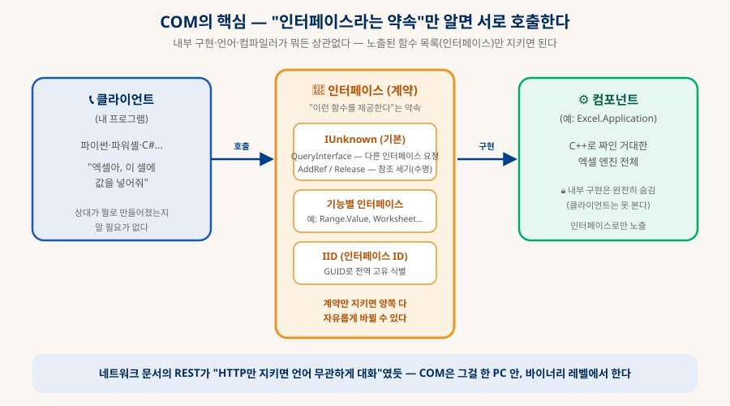
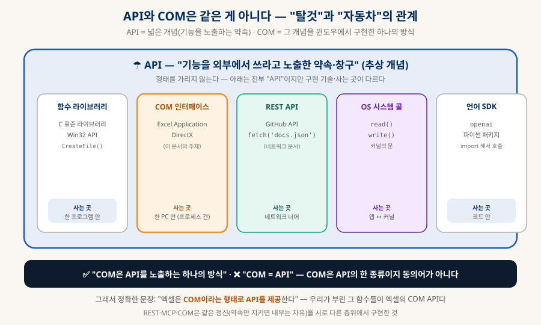
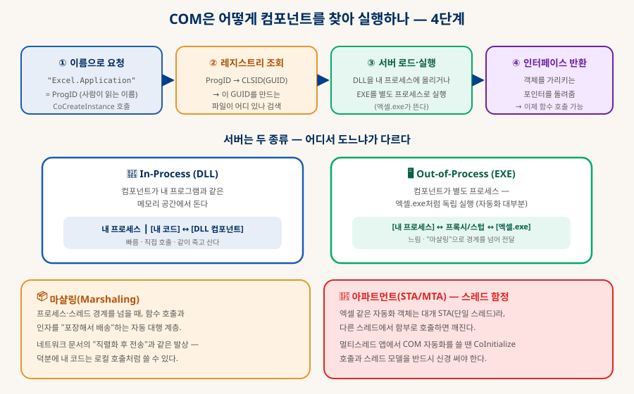
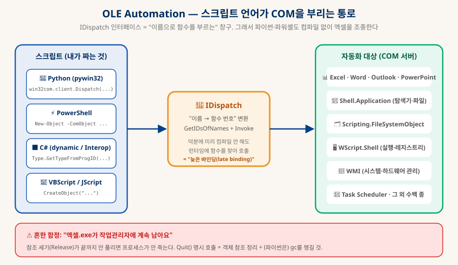
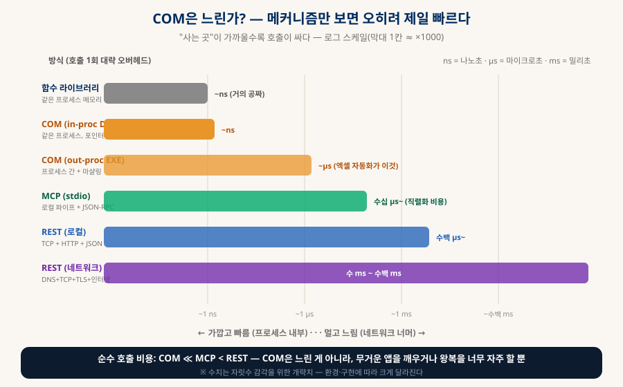
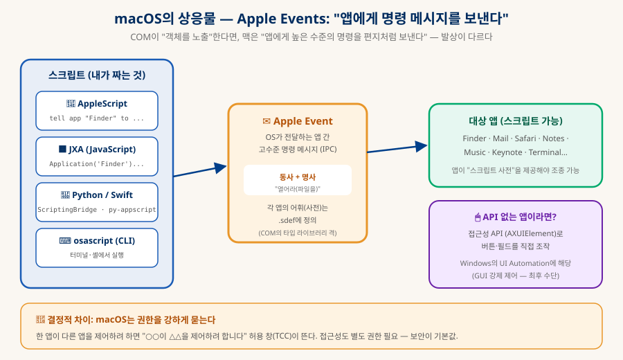
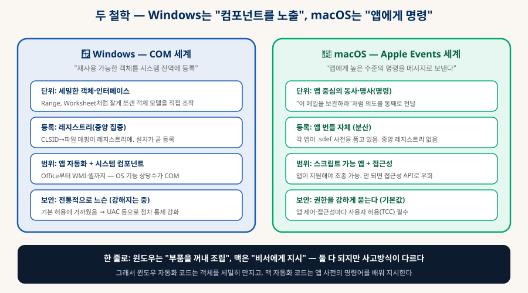

Windows COM과 맥의 자동화
프로그램이 프로그램을 부리는 두 가지 방식
바이브코딩으로 윈도우 편의 프로그램을 만들다 보면 COM으로 엑셀·탐색기·시스템을 자동화하는 길이 열린다. COM이 무엇이고, 어떻게 작동하며, 개발에서 어떻게 쓰는지 — 그리고 macOS에서 그에 상응하는 것(Apple Events·접근성)은 무엇이고 왜 철학이 다른지까지, 윈도우와 맥 개발의 차이를 한 문서로 정리한다.
0. 한눈에 보기 — 프로그램이 다른 프로그램을 부린다
바이브코딩으로 편의 프로그램을 만들 때, 자동화의 문을 여는 두 가지 열쇠
윈도우에서 "엑셀을 열어 데이터를 채우고 저장", "탐색기로 파일을 정리", "시스템 정보를 긁어오기" 같은 자동화를 하다 보면 반드시 만나는 것이 COM(Component Object Model)이다. COM은 프로그램(또는 부품)들이 언어·구현과 무관하게 서로의 기능을 호출할 수 있게 하는 윈도우의 근본 표준이고, 우리가 파이썬·파워셸로 엑셀을 조종할 수 있는 것도 전부 COM 덕분이다. 이 문서는 COM이 무엇이고(§1), 어떻게 작동하며(§2), 개발에서 어떻게 쓰는지(§3)를 정리하고 — macOS에서 같은 일을 하려면 무엇을 쓰는지(§5)와 두 세계의 철학 차이(§6)까지 이어간다.
지금도 윈도우의 뼈대
(파이썬·파워셸)
(Office·셸·WMI…)
(§5)
1. COM이란 무엇인가 — "인터페이스라는 약속"
언어·구현이 달라도 서로 호출하게 만드는 이진(binary) 표준
보통 A 프로그램이 B의 코드를 쓰려면 같은 언어로 컴파일하거나 소스를 공유해야 한다. COM은 그 벽을 없앤다 — "이런 함수들을 제공한다"는 인터페이스(약속)만 지키면, 내부 구현·언어·컴파일러가 무엇이든 서로 호출할 수 있다. 약속이 언어 위가 아니라 컴파일된 바이너리 레벨(ABI)에 있기 때문에, C++로 만든 엑셀 엔진을 파이썬이 그대로 부린다.

| 개념 | 뜻 |
|---|---|
| 인터페이스 | 컴포넌트가 노출하는 함수 목록(약속). 이것으로만 대화하고 내부는 숨긴다. 이름은 관례상 I로 시작(IUnknown, IDispatch…). |
| IUnknown | 모든 COM 객체의 기본 인터페이스. ① QueryInterface(이 객체가 다른 인터페이스도 지원하나 물어보기) ② AddRef/Release(참조 세기로 수명 관리). |
| 참조 세기 | 객체를 몇 곳이 붙들고 있는지 세다가 0이 되면 스스로 소멸. COM의 수동 메모리 관리 방식 — 이게 안 풀리면 엑셀.exe가 안 죽는다(§3). |
| GUID / CLSID / IID | 전역 고유 식별자(128비트). 클래스에 붙으면 CLSID, 인터페이스에 붙으면 IID. 이름 충돌 없이 세상의 모든 COM 요소를 구분. |
| ProgID | 사람이 읽는 이름("Excel.Application"). 레지스트리에서 CLSID로 번역된다 — 우리가 코드에 쓰는 것이 이것. |
＊잠깐 — 그럼 COM과 API는 같은 건가?
자주 헷갈리는 지점이라 짚고 간다. 결론부터: 같은 개념이 아니다. API가 넓은 일반 개념이고, COM은 그 개념을 윈도우에서 구현하는 특정 방식 중 하나다 — "탈것"과 "자동차"의 관계에 가깝다. 자동차는 탈것이지만, 탈것이 곧 자동차는 아니다.
API(Application Programming Interface)는 "프로그램의 기능을 외부에서 쓰라고 노출한 약속·창구"라는 추상 개념으로, 형태를 가리지 않는다. COM은 그 약속을 바이너리(이진) 수준의 객체·인터페이스로 구현한 하나의 구체적 규격이다. 즉 COM은 API를 제공하는 여러 방법 중 하나일 뿐, API가 전부 COM인 것은 절대 아니다.

| API의 형태 | 예 | 사는 곳 |
|---|---|---|
| 함수 라이브러리 | C 표준 라이브러리, Win32 API(CreateFile 등) | 한 프로그램 안 |
| COM 인터페이스 | Excel.Application, DirectX | 한 PC 안 (프로세스 간) — 이 문서의 주제 |
| REST API | GitHub API, fetch('docs.json') | 네트워크 너머 (「네트워크 통신 정리」) |
| OS 시스템 콜 | read(), write() | 앱 ↔ 커널 |
| 언어 SDK | openai 파이썬 패키지 | 코드 안 |
2. 어떻게 작동하나 — 이름에서 실행까지
"Excel.Application" 한 줄이 실제로 무슨 일을 일으키는가
A컴포넌트를 찾아 실행하는 4단계

파이썬에서 Dispatch("Excel.Application") 한 줄을 부르면: ① 이름(ProgID)으로 요청하고 ② 윈도우가 레지스트리에서 그 이름의 CLSID(GUID)와, 그걸 만드는 파일이 어디 있는지 찾고 ③ 그 서버를 로드·실행하고(엑셀.exe가 뜬다) ④ 객체를 가리키는 인터페이스 포인터를 돌려준다. 이때 서버는 두 종류다 — In-Process(DLL)는 내 프로그램과 같은 메모리에서 돌아 빠르고, Out-of-Process(EXE)는 엑셀처럼 별도 프로세스로 돌아(자동화 대부분이 이쪽) 경계를 넘는 대행이 필요하다.
B프로세스·스레드 함정 — 자동화 개발자를 무는 것
| 함정 | 내용과 대처 |
|---|---|
| 🧵 아파트먼트(STA/MTA) | 엑셀 같은 자동화 객체는 대개 STA(단일 스레드 아파트먼트)라, 만든 스레드에서만 안전하게 호출된다. 멀티스레드 앱에서 다른 스레드가 함부로 부르면 깨진다. 스레드마다 CoInitialize() 호출 + 스레드 모델을 반드시 챙길 것. |
| 👻 좀비 프로세스 | "엑셀.exe가 작업관리자에 계속 남아요" — 참조 세기(Release)가 끝까지 안 풀린 것. app.Quit() 명시 호출 + 잡은 객체 참조를 모두 정리(파이썬은 del·gc)해야 프로세스가 죽는다. |
| 🔢 32/64비트 | 32비트 COM 서버는 32비트 프로세스에서, 64비트는 64비트에서 로드된다. 파이썬 비트와 대상 컴포넌트 비트가 어긋나면 "클래스를 등록할 수 없음" 오류. 특히 오래된 드라이버·ActiveX에서 흔하다. |
| 🔐 권한(UAC) | 관리자 권한이 필요한 COM 서버는 승격되지 않은 프로세스에서 접근이 막힐 수 있다. WMI 일부·시스템 컴포넌트에서 발생. |
3. 개발에 쓰는 법 — 스크립트로 COM 부리기
컴파일 없이도 파이썬·파워셸 한 줄로 엑셀이 열린다 — 그 원리와 실전 코드
AOLE Automation과 IDispatch — 스크립트가 COM을 만나는 지점
C++로 COM을 쓰려면 인터페이스를 미리 컴파일해야 한다(빠른 바인딩). 하지만 파이썬·파워셸 같은 스크립트 언어는 컴파일이 없다. 이걸 가능하게 하는 것이 IDispatch 인터페이스다 — "이름으로 함수를 찾아 런타임에 호출"(늦은 바인딩)하게 해주는 창구. 이 위에 세운 규약이 OLE Automation이고, 덕분에 스크립트가 엑셀의 Range("A1").Value = 10 같은 걸 그대로 부릴 수 있다.

B실전 코드 레시피 — 바로 쓰는 자동화
import win32com.client as win32 import pythoncom pythoncom.CoInitialize() # ★ 스레드에서 COM 초기화 excel = win32.Dispatch("Excel.Application") # ProgID로 엑셀 실행 (out-of-process) excel.Visible = False # 창 안 띄우고 백그라운드로 try: wb = excel.Workbooks.Add() ws = wb.Worksheets(1) ws.Range("A1").Value = "안녕" # 객체 모델을 점(.)으로 파고든다 ws.Range("A2").Value = 42 wb.SaveAs(r"C:\temp\out.xlsx") finally: wb.Close(SaveChanges=False) excel.Quit() # ★ 명시적 종료 — 안 하면 엑셀.exe 좀비 del ws, wb, excel # ★ 참조 정리 pythoncom.CoUninitialize()
# 탐색기로 폴더 열기 (Shell.Application) $shell = New-Object -ComObject Shell.Application $shell.Open("C:\Users") # 아웃룩으로 메일 초안 만들기 $ol = New-Object -ComObject Outlook.Application $mail = $ol.CreateItem(0) $mail.To = "someone@example.com"; $mail.Subject = "자동 보고"; $mail.Display() # 다 쓰면 해제 (좀비 방지) [System.Runtime.Interopservices.Marshal]::ReleaseComObject($ol) | Out-Null
# PowerShell: 디스크 여유 공간, 실행 중 프로세스, 설치 앱 등 시스템 정보를 긁는다 Get-CimInstance Win32_LogicalDisk | Select DeviceID, FreeSpace, Size Get-CimInstance Win32_Process | Where { $_.Name -eq "chrome.exe" } # WMI는 시스템을 COM 객체로 노출한 거대한 자동화 표면 — 편의 프로그램의 보물창고
| 자주 쓰는 COM 서버 | ProgID | 무엇에 |
|---|---|---|
| Office | Excel/Word/Outlook.Application | 문서·메일·일정 자동 생성·가공 |
| 셸·탐색기 | Shell.Application | 폴더 열기, 특수 폴더 경로, 압축 등 |
| 파일 시스템 | Scripting.FileSystemObject | 파일·폴더 조작(고전적 방식) |
| 셸 실행·환경 | WScript.Shell | 프로그램 실행, 환경변수, 레지스트리, 바로가기 |
| 시스템 관리 | WbemScripting (WMI) | 하드웨어·프로세스·서비스·이벤트 조회/제어 |
| 작업 예약 | Schedule.Service | 작업 스케줄러 자동 등록 |
4. 성능 — COM은 느린가?
직관과 반대다 — 메커니즘만 보면 COM이 REST·MCP보다 훨씬 빠르다
"엑셀 자동화가 굼뜨니 COM은 느린 기술" — 흔한 오해지만 사실과 반대에 가깝다. §1의 "사는 곳"을 그대로 속도로 환산해 보면, 가까운 곳일수록 호출이 싸다. COM은 바이너리 레벨에서 직접(in-process) 또는 OS 파이프로(out-of-process) 통신하는 반면, REST는 매 호출마다 JSON을 만들고·HTTP 헤더 붙이고·TCP로 보내고·파싱한다 — 네트워크 문서에서 본 그 계층들이 전부 비용이다. MCP도 JSON-RPC 직렬화가 붙어 COM보다 무겁다.

A그럼 왜 엑셀 자동화는 느리게 느껴지나 — 진짜 원인 3가지
체감 느림의 원인은 전부 COM 자체가 아니라 그 위·옆에 있다:
| 진짜 원인 | 내용과 해결 |
|---|---|
| ① 무거운 앱을 깨움 | Range("A1").Value=10이 느린 건 전달이 아니라 엑셀이 재계산·화면 갱신·이벤트 처리를 하기 때문. 화면 갱신·자동 계산을 끄면 몇 배 빨라진다 — 무거운 건 컴포넌트지 COM이 아니다. |
| ② 왕복을 너무 자주 | 셀 1만 개에 호출을 1만 번 날리면 프로세스 경계를 1만 번 넘는다(out-of-process). 마샬링은 한 번은 싸도 쌓이면 비싸다. 2차원 배열을 한 번에 통째로 전달해 왕복을 1번으로 — REST에서 "배치 요청"과 같은 원리. |
| ③ 늦은 바인딩 | 파이썬·파워셸의 Dispatch는 매 호출마다 "이 함수 번호가 뭐지?"를 조회한다(§3의 GetIDsOfNames). 빠른 바인딩으로 바꾸면 이 비용이 사라진다. |
import win32com.client as win32 # ③ 빠른 바인딩: gencache로 타입 정보를 캐시 → 이름 조회 비용 제거 excel = win32.gencache.EnsureDispatch("Excel.Application") # ① 무거운 처리 끄기: 화면 갱신·자동 계산·이벤트 중단 excel.ScreenUpdating = False excel.Calculation = -4135 # xlCalculationManual (수동 계산) excel.EnableEvents = False ws = excel.Workbooks.Add().Worksheets(1) # ② 왕복 최소화: 셀 하나씩(느림) 대신 2차원 배열을 한 번에 전달(빠름) data = [[r*10 + c for c in range(100)] for r in range(1000)] # 10만 셀 ws.Range("A1").Resize(1000, 100).Value = data # ★ COM 왕복 1번으로 끝 # ↑ 이걸 이중 for문으로 셀마다 .Value 하면 왕복 10만 번 → 수십 배 느림 excel.Calculation = -4105 # xlCalculationAutomatic (복구) excel.ScreenUpdating = True
5. macOS의 상응물 — "앱에게 명령을 보낸다"
맥에는 COM이 없다. 대신 발상이 다른 자동화 체계가 있다
AApple Events — 맥 자동화의 심장
macOS의 COM 대응물은 Apple Events다. 하지만 발상이 다르다 — COM이 "재사용 객체를 노출"한다면, Apple Events는 "앱에게 높은 수준의 명령을 편지처럼 보낸다". "이 메일을 보관하라", "이 파일을 휴지통으로"처럼 의도를 통째로 전달한다. 각 앱은 자신이 알아듣는 명령 어휘(동사·명사)를 .sdef(스크립트 정의) 파일로 품고 있다 — COM의 타입 라이브러리 격이다.

-- Finder에게 "휴지통 비우라"고 지시 tell application "Finder" empty trash end tell -- Mail로 메일 초안 만들기 (엑셀 대신 Numbers·Mail 등이 대상) tell application "Mail" set msg to make new outgoing message with properties {subject:"자동 보고", visible:true} tell msg to make new to recipient at end with properties {address:"someone@example.com"} end tell
// osascript -l JavaScript 로 실행하거나 스크립트 에디터에서 const Finder = Application('Finder') const Safari = Application('Safari') Safari.activate() Safari.documents[0].url() // 현재 사파리 탭 URL 읽기 // 터미널에서 한 줄로: osascript -e 'tell app "Finder" to empty trash'
B그 밖의 길 — 접근성 · Scripting Bridge · 노코드
| 방법 | 무엇에 쓰나 — 그리고 Windows 대응 |
|---|---|
| Scripting Bridge | Objective-C·Swift에서 앱의 .sdef로부터 타입을 생성해 네이티브 코드로 앱 제어. Windows의 "타입 라이브러리로 빠른 바인딩" 대응. |
| osascript (CLI) | 터미널·셸에서 AppleScript/JXA를 한 줄로 실행. 파워셸 -ComObject 원라이너의 맥 버전. |
| 접근성 API (AXUIElement) | 스크립트를 지원 안 하는 앱의 버튼·필드를 직접 조작(GUI 강제 제어). Windows의 UI Automation에 해당 — 최후 수단. |
| py-appscript / PyObjC | 파이썬에서 Apple Events·Cocoa 접근. pywin32의 맥 짝. |
| Shortcuts · Automator | 코드 없이 GUI로 자동화 조립. Windows의 Power Automate 대응(노코드). |
| XPC | 내 앱이 자기 컴포넌트끼리 안전하게 통신하는 현대 IPC. Windows에서 앱 내부 컴포넌트를 COM/WinRT로 나누는 것에 대응(앱 자동화가 아니라 앱 아키텍처). |
6. 두 세계 비교 — 부품 조립 vs 비서에게 지시
같은 자동화, 다른 사고방식 — 그리고 목적별 대응표

| 축 | Windows (COM) | macOS (Apple Events) |
|---|---|---|
| 비유 | 부품을 꺼내 직접 조립 | 비서에게 할 일을 지시 |
| 단위 | 세밀한 객체·인터페이스(Range, Worksheet) | 앱 중심의 동사·명사(명령) |
| 등록 | 레지스트리(중앙 집중) — 설치가 곧 등록 | 앱 번들이 .sdef를 품음(분산) — 중앙 레지스트리 없음 |
| 타입 정의 | 타입 라이브러리(.tlb) · ProgID | 스크립트 정의(.sdef) |
| 스크립트 창구 | IDispatch (pywin32·PowerShell) | Apple Event (AppleScript·JXA·osascript) |
| API 없을 때 | UI Automation · SendMessage | 접근성 API(AXUIElement) |
| 노코드 | Power Automate | Shortcuts · Automator |
| 보안 | 전통적으로 느슨(UAC로 강화 중) | 권한을 강하게 물음(TCC 기본) |
| 범위 | 앱 자동화 + 시스템 컴포넌트(WMI·셸)까지 | 스크립트 지원 앱 중심 + 접근성 우회 |
A"이걸 하고 싶다 → 어떻게" 대응표
| 하고 싶은 것 | Windows | macOS |
|---|---|---|
| 스프레드시트 자동 생성·가공 | Excel COM (pywin32) | Numbers를 AppleScript/JXA로 (또는 openpyxl로 파일 직접) |
| 메일 자동 발송 | Outlook COM | Mail을 AppleScript로 |
| 파일·폴더 일괄 정리 | Shell.Application / FSO | Finder를 AppleScript로 (또는 그냥 셸 mv·파이썬) |
| 브라우저 조종 | WebBrowser COM(구식) / UIA | Safari를 JXA로 |
| 시스템 정보 긁기 | WMI (COM) | system_profiler·defaults·셸 |
| API 없는 앱 버튼 누르기 | UI Automation | 접근성 API(AXUIElement) |
| 코드 없이 자동화 | Power Automate | Shortcuts / Automator |
7. 출처 · 더 읽을거리
공식 문서 위주 — 실제 개발 시 참조
- Microsoft Learn — Component Object Model (COM) 포털 COM·IUnknown·인터페이스·마샬링·아파트먼트 등 §1·§2의 1차 출처
- Microsoft Learn — OLE Automation / IDispatch §3-A. 스크립트가 COM을 부리는 늦은 바인딩 규약
- pywin32 — Python for Windows Extensions §3-B. win32com으로 COM 자동화하는 파이썬 라이브러리
- Microsoft Learn — WMI (Windows Management Instrumentation) §3-B. 시스템을 COM 객체로 노출한 관리 표면
- Apple Developer — AppleScript / Apple Events 개요 §5-A. macOS 앱 간 자동화 메시징 (일부 아카이브 문서)
- Apple — Mac Automation Scripting Guide (AppleScript·JXA) §5. JXA 문법과 스크립팅 사전(.sdef) 사용법
- Apple Developer — Scripting Bridge §5-B. Obj-C·Swift에서 앱을 네이티브로 제어
- Microsoft Learn — UI Automation / Apple — Accessibility(AXUIElement) §5-B. API 없는 앱을 GUI로 강제 제어하는 양쪽 수단